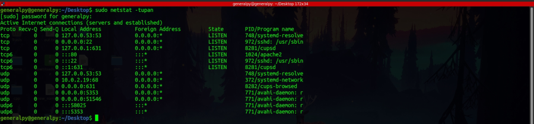
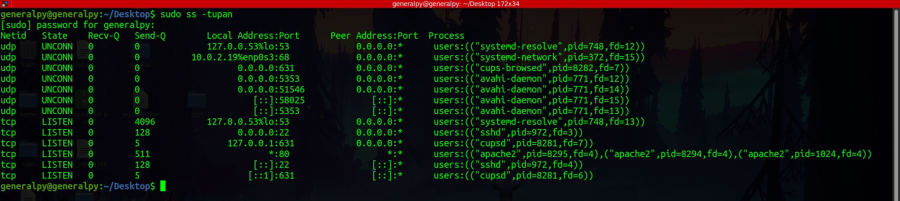
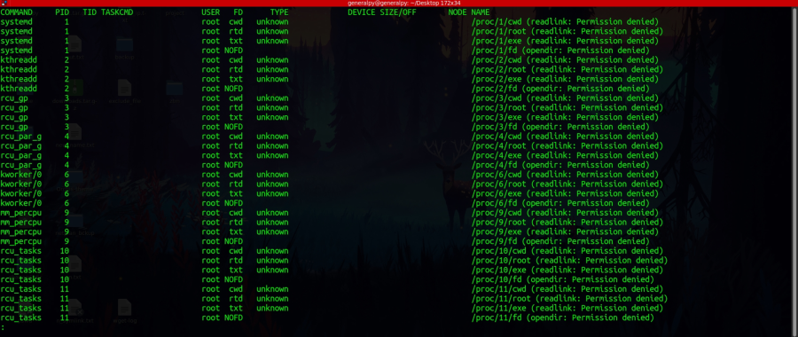
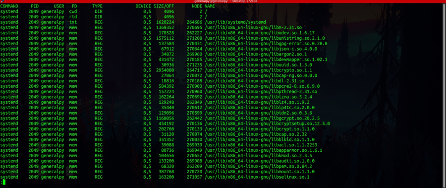
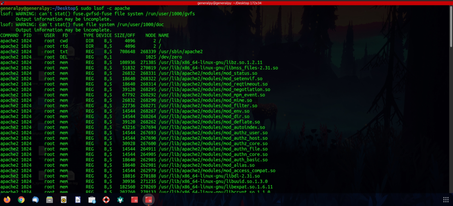
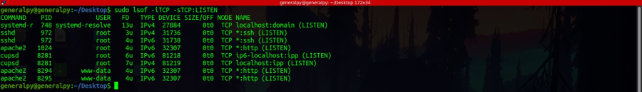
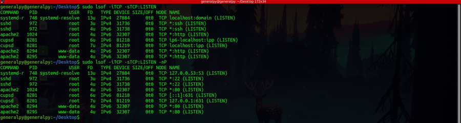
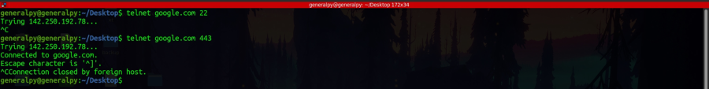

Checking which service is used on which port is important to troubleshoot problems.
netstat is one such command which can be used to know which services are running on which ports.

-t is used to show tcp ports.
-u is used to show udp ports.
-p is used to show process name and id.
-a is used to show all ports, open or not.
-n makes netstat print addresses as dotted quad IP numbers rather than the symbolic host and network names.s
• 0.0.0.0 is a non-routable meta-address used to designate an invalid, unknown, or non-applicable target (a ‘no particular address’ place holder).
There is another command known as ss(socket statistics) which is now available as an replacement to netstat command. Almost all options of it are same as netstat.

lsof command can be used to list all files opened by any process.
Output of lsof given to less :

To search for files opened by a process run by a particular user, use -u flag.

All process run by generalpy.
Use -c to list open files by a particular process.

To check all open tcp ports using lsof use :
sudo lsof -iTCP -sTCP:LISTEN

User -nP to show hostnames and ports in numeric form.

To show info about any particular port by appending : and port number after -iTCP.
The above commands are used to show open ports on current system also known as local host.
To check open ports on different system, use telnet to scan that system or use proffesional port scanner like nmap.
telnet ip port
Above command will check if port is open.

443 is open and 22 is closed.